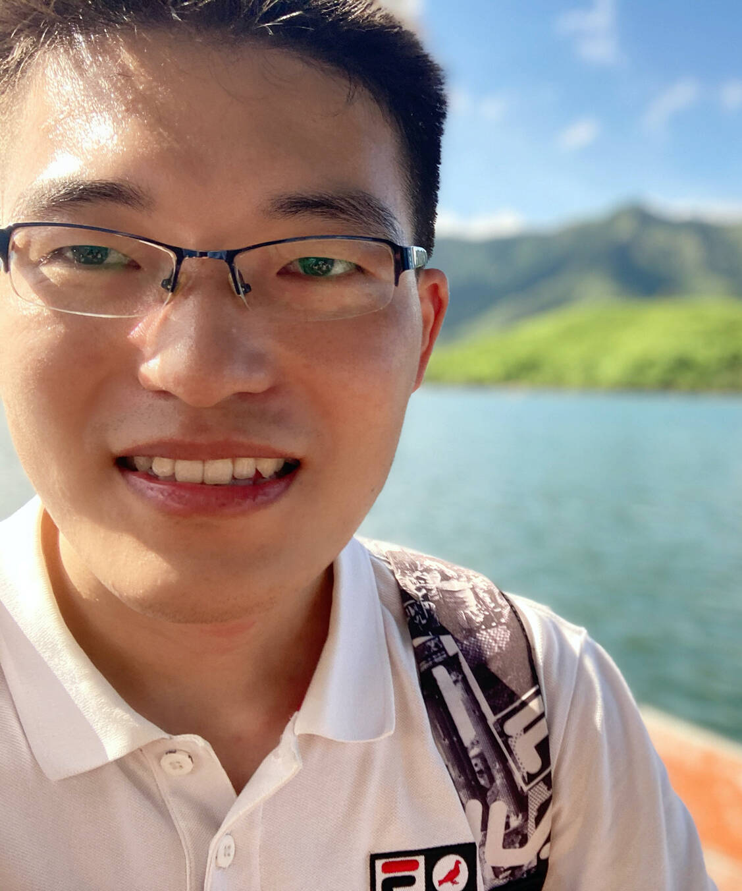

|  | Xufeng YAOPh.D. student Department of Computer Science and Engineering
|


Biography
I am a third-year Ph.D. student at the Department of Computer Science and Engineering, The Chinese University of Hong Kong (CUHK), under the supervision of Prof. Bei Yu and Prof. Hong Xu since Fall 2021. Previously, I received my B.Eng. in Information System and Information Management from Fudan University (FDU) in 2016 and Msc in Computer Science from The Chinese University of HongKong (CUHK) in 2020. My research interests include Large Language Model, Computer Vision and Machine Learning in EDA.
Research Summary
- Large Language Model (MLCAD23, TCAD24, DAC24)
- Computer Vision & Deep Learning (ICCAD20, CVPR22, CVPR23, ICCV23, TNNLS23, ECCV24, AAAI24)
- Machine Learning in EDA (ICCAD21, ICCAD22, TCAD22, MLCAD23, TCAD23, DAC24)
Publications
Conference papers
[C1] Zixiao Wang, Yunheng Shen, Xufeng Yao, Wenqian Zhao, Yang Bai, Farzan Farnia, Bei Yu, “ChatPattern: Layout Pattern Customization via Natural Language”, ACM/IEEE Design Automation Conference (DAC), San Francisco, Jun. 23–27, 2024.
[C2] Xufeng Yao, Fanbin Lu, Yuechen Zhang, Xinyun Zhang, Wenqian Zhao, Bei Yu, “Progressively Knowledge Distillation via Re-parameterizing Diffusion Reverse Process”, AAAI Conference on Artificial Intelligence (AAAI), Vancouver, Feb. 20–27, 2024. (paper) (slides) (poster)
[C3] Haoyuan Wu, Xinyun Zhang, Peng Xu, Peiyu Liao, Xufeng Yao, Bei Yu, “p-Laplacian Adaptation for Generative Pre-trained Vision-Language Models”, AAAI Conference on Artificial Intelligence (AAAI), Vancouver, Feb. 20–27, 2024. (paper) (slides) (poster) (Oral)
[C4] Wanli Chen, Xufeng Yao, Xinyun Zhang, Bei Yu, “Efficient Deep Space Filling Curve”, IEEE International Conference on Computer Vision (ICCV), Paris, Oct. 02–06, 2023. (paper) (poster)
[C5] Zhuolun He, Haoyuan Wu, Xinyun Zhang, Xufeng Yao, Su Zheng, Haisheng Zheng and Bei Yu, “ChatEDA: A Large Language Model Powered Autonomous Agent for EDA”, ACM/IEEE Workshop on Machine Learning for CAD (MLCAD), Utah, Sep. 11-13, 2023. (paper) (arXiv)
[C6] Wenqian Zhao, Xufeng Yao, Ziyang Yu, Guojin Chen, Yuzhe Ma, Bei Yu, Martin Wong, “AdaOPC: A Self-Adaptive Mask Optimization Framework For Real Design Patterns”, IEEE/ACM International Conference on Computer-Aided Design (ICCAD), San Diego, Oct. 30–Nov. 3, 2022. (paper) (slides) (
 video)
video)[C7] Xufeng Yao, Yang Bai, Xinyun Zhang, Yuechen Zhang, Qi Sun, Ran Chen, Ruiyu Li, Bei Yu, “PCL: Proxy-based Contrastive Learning for Domain Generalization”, IEEE/CVF Conference on Computer Vision and Pattern Recognition (CVPR), New Orleans, Jun. 19–24, 2022. (paper) (poster) (slides) (
video)
( code)
code)[C8] Xinyun Zhang, Binwu Zhu, Xufeng Yao, Qi Sun, Ruiyu Li, Bei Yu, “Context-based Contrastive Learning for Scene Text Recognition”, AAAI Conference on Artificial Intelligence (AAAI), Feb. 22–Mar. 1, 2022. (paper) (poster) (
video)[C9] Yang Bai, Xufeng Yao, Qi Sun, Bei Yu, “AutoGTCO: Graph and Tensor Co-Optimize for Image Recognition with Transformers on GPU”, IEEE/ACM International Conference on Computer-Aided Design (ICCAD), Nov. 1–4, 2021. (paper) (slides) (
video)[C10] Qi Sun, Arjun Ashok Rao, Xufeng Yao, Bei Yu, Shiyan Hu, “Counteracting Adversarial Attack in Autonomous Driving”, IEEE/ACM International Conference on Computer-Aided Design (ICCAD), Nov. 2–5, 2020. (paper) (slides) (whova)
Journal papers
[J1] Haoyuan Wu, Zhuolun He, Xinyun Zhang, Xufeng Yao, Su Zheng, Haisheng Zheng, Bei Yu, “ChatEDA: A Large Language Model Powered Autonomous Agent for EDA”, accepted by IEEE Transactions on Computer-Aided Design of Integrated Circuits and Systems (TCAD).
[J2] Wenqian Zhao, Xufeng Yao, Shuo Yin, Yang Bai, Ziyang Yu, Yuzhe Ma, Bei Yu, Martin D.F. Wong, “AdaOPC 2.0: Enhanced Adaptive Mask Optimization Framework for Via Layers”, accepted by IEEE Transactions on Computer-Aided Design of Integrated Circuits and Systems (TCAD).
[J3] Zehua Pei, Xufeng Yao, Wenqian Zhao, Bei Yu, “Quantization via Distillation and Contrastive Learning”, accepted by IEEE Transactions on Neural Networks and Learning Systems (TNNLS).
[J4] Yuzhe Ma, Xufeng Yao, Ran Chen, Ruiyu Li, Xiaoyong Shen, Bei Yu, “Small is Beautiful: Compressing Deep Neural Networks for Partial Domain Adaptation”, IEEE Transactions on Neural Networks and Learning Systems (TNNLS), vol. 35, no. 03, pp. 3575–3585, 2024. (paper)
[J5] Yang Bai, Xufeng Yao, Qi Sun, Wenqian Zhao, Shixin Chen, Zixiao Wang, Bei Yu, “GTCO: Graph and Tensor Co-Design for Transformer-based Image Recognition on Tensor Cores”, IEEE Transactions on Computer-Aided Design of Integrated Circuits and Systems (TCAD), vol. 43, no. 02, pp. 586–599, 2024. (paper)
[J6] Qi Sun, Xufeng Yao, Arjun Ashok Rao, Bei Yu, Shiyan Hu, “Counteracting Adversarial Attacks in Autonomous Driving”, IEEE Transactions on Computer-Aided Design of Integrated Circuits and Systems (TCAD), vol. 41, no. 12, pp. 5193–5206, 2022. (paper)
Experience
PingAn-OneConnect
AI engineer, GammaLab
2017-2019, Shanghai
Topic: Computer Vision, Knowledge Graph
SmartMore
Researcher, Heterogeneous Computing Group
May. 2020 – July. 2021, Hong Kong site
Topic: OCR; LayoutLM
Huawei
Research Intern, 2012 Laboratories
Sep. 2023 – Now, Hong Kong site
Topic: LLM4code; LLM agent
Quote
Last but not least, I would like to share a famous quote that resonates with my research style and expectations, which I came across during my academic journey.
Nothing in the world can take the place of persistence. Talent will not; nothing is more common than unsuccessful men with talent. Genius will not; unrewarded genius is almost a proverb. Education will not; the world is full of educated derelicts. Persistence and determination alone are omnipotent.